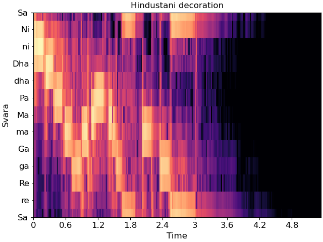

Caution
You're reading an old version of this documentation. If you want up-to-date information, please have a look at 0.9.1.
Note
Click here to download the full example code
Using display.specshow¶
This notebook gives a more in-depth demonstration of all things that specshow can do to help generate beautiful visualizations of spectro-temporal data.
# Code source: Brian McFee
# License: ISC
# sphinx_gallery_thumbnail_number = 6
All of librosa’s plotting functions rely on matplotlib. To demonstrate everything we can do, it will help to import matplotlib’s pyplot API here.
import numpy as np
import matplotlib.pyplot as plt
import librosa
import librosa.display
First, we’ll load in a demo track
y, sr = librosa.load(librosa.ex('trumpet'))
The first thing we might want to do is display an ordinary (linear) spectrogram. We’ll do this by first computing the short-time Fourier transform, and then mapping the magnitudes to a decibel scale.
D = librosa.stft(y) # STFT of y
S_db = librosa.amplitude_to_db(np.abs(D), ref=np.max)
If you’re familiar with matplotlib already, you may know that there are two ways of using it: the pyplot interface and the object-oriented interface. Both are supported by librosa, as we’ll show here.
First, the pyplot interface:

And now the object-oriented interface
fig, ax = plt.subplots()
img = librosa.display.specshow(S_db, ax=ax)
fig.colorbar(img, ax=ax)
Both figures are identical, but they use different programming interfaces to construct. Most people find the pyplot interface to be quicker to learn, but the object-oriented interface can be a little more flexible for complex figures.
For the remainder of this example, we’ll use the object-oriented interface.
Decorating your plot¶
The figure above conveys the basic content of the spectrogram, but it’s missing axis labels. Without that information, it’s impossible for a reader to know how to interpret the visualization.
specshow provides many helpers to automatically decorate the axes of your plot. For the plot above, our x-axis corresponds to time, and our y-axis corresponds to linearly spaced frequencies produced by the discrete Fourier transform. We can tell specshow to decorate the axes accordingly:
fig, ax = plt.subplots()
img = librosa.display.specshow(S_db, x_axis='time', y_axis='linear', ax=ax)
ax.set(title='Now with labeled axes!')
fig.colorbar(img, ax=ax, format="%+2.f dB")

This is much better already! Note that we also added a format string to the colorbar, so readers know how to read the color scale.
Changing axis scales¶
The linear frequency scale is sometimes helpful, but often it can difficult to read. Alternatively, it is common to use a logarithmic frequency axis. This has the benefit that every octave occupies a constant vertical extent.
We can tell specshow to use log-scaled frequency axes just as above:
fig, ax = plt.subplots()
img = librosa.display.specshow(S_db, x_axis='time', y_axis='log', ax=ax)
ax.set(title='Using a logarithmic frequency axis')
fig.colorbar(img, ax=ax, format="%+2.f dB")
Changing the analysis parameters¶
The default parameter settings used by librosa (e.g., sr=22050, hop_length=512, etc) may not be appropriate for every signal. If you change a parameter from its default value, e.g. when computing an STFT, you can pass that same parameter to specshow. This ensures that axis scales (e.g. time or frequency) are computed correctly.
fig, ax = plt.subplots()
D_highres = librosa.stft(y, hop_length=256, n_fft=4096)
S_db_hr = librosa.amplitude_to_db(np.abs(D_highres), ref=np.max)
img = librosa.display.specshow(S_db_hr, hop_length=256, x_axis='time', y_axis='log',
ax=ax)
ax.set(title='Higher time and frequency resolution')
fig.colorbar(img, ax=ax, format="%+2.f dB")
Note that only the parameters which are strictly necessary are supported by specshow. For example, without the hop_length, we wouldn’t know how to translate frame indices to time indices. However, n_fft is not needed, because it can be inferred from the shape of the input spectrogram.
A full list of the supported parameters is provided in the
librosa.display.specshow documentation.
Other types of spectral data¶
The examples above illustrate how to plot linear spectrograms, but librosa provides many kinds of spectral representations: Mel-scaled, constant-Q, variable-Q, chromagrams, tempograms, etc.
specshow can plot these just as well. For example, a Mel spectrogram can be displayed as follows:
fig, ax = plt.subplots()
M = librosa.feature.melspectrogram(y=y, sr=sr)
M_db = librosa.power_to_db(M, ref=np.max)
img = librosa.display.specshow(M_db, y_axis='mel', x_axis='time', ax=ax)
ax.set(title='Mel spectrogram display')
fig.colorbar(img, ax=ax, format="%+2.f dB")
Constant-Q plots, and other logarithmically scaled frequency representations such as Variable-Q or iirt can be decorated using either the frequencies (Hz) or their note names in scientific pitch notation:
C = librosa.cqt(y=y, sr=sr)
C_db = librosa.amplitude_to_db(np.abs(C), ref=np.max)
fig, ax = plt.subplots()
librosa.display.specshow(C_db, y_axis='cqt_hz', x_axis='time', ax=ax)
ax.set(title='Frequency (Hz) axis decoration')
fig, ax = plt.subplots()
librosa.display.specshow(C_db, y_axis='cqt_note', x_axis='time', ax=ax)
ax.set(title='Pitch axis decoration')
In the latter case, the underlying data representation is still measured in Hz; only the tick labels are changed.
Chroma representations don’t have a fixed frequency axis, and instead aggregate information across all frequencies corresponding to a given pitch class. specshow can plot these too:
chroma = librosa.feature.chroma_cqt(y=y, sr=sr)
fig, ax = plt.subplots()
img = librosa.display.specshow(chroma, y_axis='chroma', x_axis='time', ax=ax)
ax.set(title='Chromagram demonstration')
fig.colorbar(img, ax=ax)
If you also happen to know the key of the piece being analyzed, you can pass this to specshow and it will spell the notes properly:
fig, ax = plt.subplots()
img = librosa.display.specshow(chroma, y_axis='chroma', x_axis='time',
key='Eb:maj', ax=ax)
ax.set(title='Chromagram explicitly in Eb:maj')
fig.colorbar(img, ax=ax)
This will also work for ‘cqt_note’ mode.
Indian notation systems¶
# The examples above use Western music notation to identify pitch classes, but we can
# also decorate axes with either Hindustani or Carnatic svara classes.
#
# These are specified by using `y_axis='chroma_h'` or `'chroma_c'`, respectively.
#
# Just as with key identification in the chroma example above, you can specify the
# thaat (Hindustani) or melakarta number or name (Carnatic) to notate the plot.
For example, the example above is in Eb:maj (or, more accurately, F:dorian), which we can also represent in Hindustani notation as Sa=5 (F) and ‘kafi’ thaat:
fig, ax = plt.subplots()
img = librosa.display.specshow(chroma, y_axis='chroma_h', x_axis='time',
Sa=5, thaat='kafi', ax=ax)
ax.set(title='Chromagram with Hindustani notation')
fig.colorbar(img, ax=ax)
In Carnatic notation, we would use melakarta #22. Note: thaat is optional for Hindustani notation, but mela is required for Carnatic.
fig, ax = plt.subplots()
img = librosa.display.specshow(chroma, y_axis='chroma_c', x_axis='time',
Sa=5, mela=22, ax=ax)
ax.set(title='Chromagram with Carnatic notation')
fig.colorbar(img, ax=ax)
These notation schemes can also be used in cqt plots by specifying y_axis=’cqt_svara’.
In this mode, Sa must be specified in Hz. Carnatic notation is used if mela is provided, and Hindustani is used if not.
Individual svara are only notated if the display range is sufficiently small, so we’ll zoom into a single octave for this example.
Sa = librosa.note_to_hz('F4')
fig, ax = plt.subplots()
librosa.display.specshow(C_db, y_axis='cqt_svara', Sa=Sa, x_axis='time', ax=ax)
ax.set(title='Hindustani decoration',
ylim=[Sa, 2*Sa])
fig, ax = plt.subplots()
librosa.display.specshow(C_db, y_axis='cqt_svara', Sa=Sa, mela=22, x_axis='time', ax=ax)
ax.set(title='Carnatic decoration',
ylim=[Sa, 2*Sa])
- 
Non-spectral data¶
specshow can also be used for data that isn’t exactly spectro-temporal. One common application is recurrence (self-similarity) plots, which are time-by-time, as illustrated below.
R = librosa.segment.recurrence_matrix(chroma, mode='affinity')
fig, ax = plt.subplots()
img = librosa.display.specshow(R, y_axis='time', x_axis='time', ax=ax)
ax.set(title='Recurrence / self-similarity')
fig.colorbar(img, ax=ax)
In this example, notice that we used ‘time’ for both axis labels. In general, any of the supported modes can be used for either axis. For example, we could also plot the chroma covariance plot with chroma decorations on each axis:
Certain plots (e.g. covariance, self-similarity) are automatically squared by specshow. To override that, pass auto_scale=False.
Color maps¶
You may have noticed that the color mappings for the images above
were selected automatically by specshow.
This is done by librosa.display.cmap according to the following heuristic:
If the data is boolean, use black-and-white
If the data is (mostly) positive or (mostly) negative, use a sequential colormap
If the data contains both positive and negative values, use a diverging colormap.
The default sequential colormap is ‘magma’, which is perceptually uniform and converts gracefully to grayscale.
You can always override this automatic colormap selection by setting an explicit cmap:
fig, ax = plt.subplots()
img = librosa.display.specshow(S_db, cmap='gray_r', y_axis='log', x_axis='time', ax=ax)
ax.set(title='Inverted grayscale')
fig.colorbar(img, ax=ax, format="%+2.f dB")
specshow uses matplotlib.pyplot.pcolormesh to generate the underlying image.
Any parameters to pcolormesh can be passed through from specshow, for example,
to set explicit bounds on the minimum and maximum ranges for colors.
This can be helpful when centering divergent colormaps around 0 (or some other
reference point).
Multiple plots¶
Often, we’ll want to show multiple synchronized features simultaneously. This can be done using matplotlib’s subplot mechanism and sharing axes. There are many examples of this throughout the librosa documentation, but here we’ll go through it step by step.
# Construct a subplot grid with 3 rows and 1 column, sharing the x-axis)
fig, ax = plt.subplots(nrows=3, ncols=1, sharex=True)
# On the first subplot, show the original spectrogram
img1 = librosa.display.specshow(S_db, x_axis='time', y_axis='log', ax=ax[0])
ax[0].set(title='STFT (log scale)')
# On the second subplot, show the mel spectrogram
img2 = librosa.display.specshow(M_db, x_axis='time', y_axis='mel', ax=ax[1])
ax[1].set(title='Mel')
# On the third subplot, show the chroma features
img3 = librosa.display.specshow(chroma, x_axis='time', y_axis='chroma',
key='Eb:maj', ax=ax[2])
ax[2].set(title='Chroma')
# To eliminate redundant axis labels, we'll use "label_outer" on all subplots:
for ax_i in ax:
ax_i.label_outer()
# And we can share colorbars:
fig.colorbar(img1, ax=[ax[0], ax[1]])
# Or have individual colorbars:
fig.colorbar(img3, ax=[ax[2]])
# We can then even do fancy things like zoom into a particular time and frequency
# region. Since the axes are shared, this will apply to all three subplots at once.
ax[0].set(xlim=[1, 3]) # Zoom to seconds 1-3
Non-uniform axes¶
All of the examples so far have used either uniformly, linearly, or geometrically spaced axes. But sometimes, we have non-uniform sampling of data, and we’d like to plot it in natural coordinates.
One example of this is when using beat-synchronous features in the common case where the tempo is not exactly fixed. To demonstrate this, we’ll use a longer example clip.
To specify non-uniform axis sampling, you will need to provide the x_coords (or y_coords) array indicating the position of each sample, as demonstrated below.
y, sr = librosa.load(librosa.ex('nutcracker'))
chroma = librosa.feature.chroma_cqt(y=y, sr=sr)
tempo, beats = librosa.beat.beat_track(y=y, sr=sr)
# beats contains the frame indices of each detected beat
# for synchronization and visualization, we'll need to expand this
# to cover the limits of the data. This can be done as follows:
beats = librosa.util.fix_frames(beats, x_min=0, x_max=chroma.shape[1])
# Now beat-synchronize the chroma features
chroma_sync = librosa.util.sync(chroma, beats, aggregate=np.median)
# For visualization, we can convert to time (in seconds)
beat_times = librosa.frames_to_time(beats)
# We'll plot the synchronized and unsynchronized features next
# to each other
fig, ax = plt.subplots(nrows=2, sharex=True)
img = librosa.display.specshow(chroma, y_axis='chroma', x_axis='time', ax=ax[0],
key='Eb:maj')
ax[0].set(title='Uniform time sampling')
ax[0].label_outer()
librosa.display.specshow(chroma_sync, y_axis='chroma', x_axis='time',
x_coords=beat_times, ax=ax[1], key='Eb:maj')
ax[1].set(title='Beat-synchronous sampling')
fig.colorbar(img, ax=ax)
# For clarity, we'll zoom in on a 15-second patch
ax[1].set(xlim=[10, 25])
Conclusion¶
This series of examples demonstrates most of the functionality of
librosa.display.specshow, but it does not exhaustively show
every option, e.g., for axis decoration.
Interested readers should look through the rest of the API
documentation to see how these other options can be used
effectively.
Total running time of the script: ( 0 minutes 9.093 seconds)